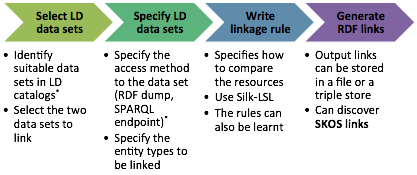
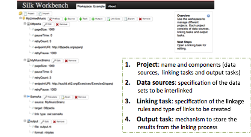
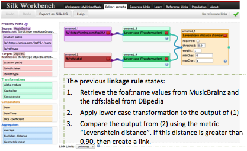

As mentioned in section 3.4, manually interlinking large datasets is not feasible. SILK [32] is a tool that has been developed to support the interlinking of datasets. In our case we may wish to define links between artists mentioned in MusicBrainz and the same entities in DBpedia. This process fits specifically in the interlinking phase of the diagram of Figure 44.
Figure 44: Interlinking datasets with SILK.
SILK is an open source tool for discovering RDF links between data items within different Linked Data sources. The Silk Link Specification Language (Silk-LSL) is used to define rules for linking entities from two different datasets. For example, a rule may express that if two entities belong to specified classes and have matching labels then they should be linked by a certain property. This property could be owl:sameAs or some other property such as skos:closeMatch (see section 3.4).
SILKS can run in different variations. It can be run locally on a single machine, on a server or distributed across a cluster. The SILK workflow is shown in Figure 3.44. The first step is to select the two datasets. Generally, one dataset would be your own and another including some of the same entities but named with different URIs. In the second step, we specify the two datasets by either loading an RDF dump or pointing to a SPARQL endpoint. We also specify the types of entities to be linked. In the third step, we express the linkage rules in Silk-LSL. The discovered links can then be published as a linkset (see section 3.5.1) with your dataset.

Figure 45: SILK workflow based on [33].
The rules for comparing two entities can consider not only the two entities themselves but also additional data items found in the graph around each of those entities. For example, a rule may compare the rdfs:label of one entity with the foaf:name of another. The paths from the compared entities to these additional data items are specified as RDF paths. Different transformations can be also be performed on the compared data items. For example, if they are strings (such as labels or names) then they may be both transformed into lower case to prevent the use of lower and upper case leading to a mismatch. The linkage rules also define the comparators used to compute the similarity of the two data items. When comparing two strings, an exact match may be required. Alternatively, similarly may be computed as a Levenshtein edit distance. This indicates the number of single character changes that would need to be made in order to turn one string into the other. This provides a way of matching data items that may contain typos. Similarity metrics can be used for other data types such as dates. Finally, aggregations can be computed from data items associated with the entity. For example, two potentially matching albums could be compared in terms of the number of track that they contain. If the number of tracks is equal then this could be further evidence that these two entities refer to the same album.
The SILK Workbench is a web application built on top of SILK that can be used to create projects and manage the creation of links between two RDF datasets. The SILK Workbench has a graphical editor that can be used to create linkage rules. Support is also provided for the automatic learning of linkage rules. Figure 3.46 shows a snapshot of the SILK Workbench. A new project has been created with the name “MyLinkedMusic”. Two datasets have been added, labelled as DBpedia and MyMusicBrainz. The sections below this are concerned with the specification of linkage rules and the location and format of the output.

Figure 46: Overview of a Silk Workbench project
Figure 47 shows how the graphical editor can be used to specify linage rules. In this example the foaf:name of the MusicBrainz entity and the rdfs:label of the DBpedia entity are both transformed to lower case and then compared in terms of their Levenshtein edit distance.

Figure 47: Adding a linkage rule in the SILK workbench.
The linkage rules can then be used to generate a set of links as shown in Figure 48. Each of these links between a MusicBrainz and DBpedia identifier has a confidence score. The larger the Levenshtein edit distance between the foaf:name and rdfs:label, the lower the confidence. All of the examples listed have a confidence score of 100% indicating a zero edit distance between the two literals. Confidence can be accumulated from a number of sources. When comparing music groups, this could include other data such as their membership and formation date.
Figure 48: Generating links with the SILK workbench.
The SILK Workbench also provides an interface for examining automatically learned rules. These suggested rules can then be added to the set of linkage rules or rejected.
Figure 49: Rule learning with the SILK workbench.